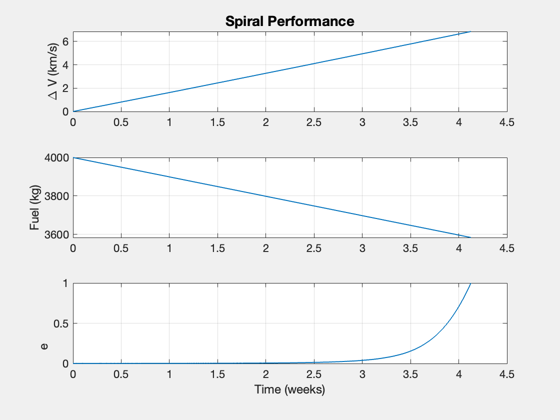
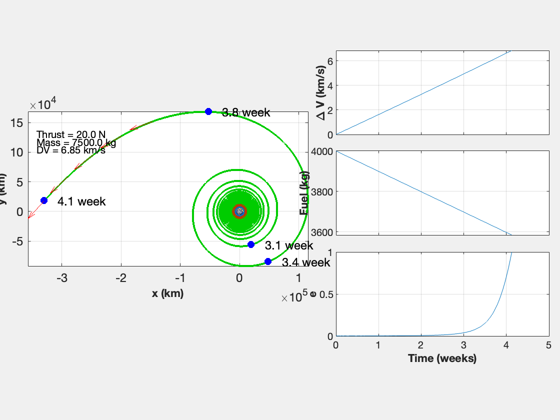

Contents
Simulate a departure from the Earth
Treat the problem as planar. Has a rendezvous.
%-------------------------------------------------------------------------- % See also: Date2JD. TwoDEscape, LambertTOF, RV2El, RVOrbGen %-------------------------------------------------------------------------- %-------------------------------------------------------------------------- % Copyright (c) 2017 Princeton Satellite Systems, Inc. % All rights reserved. %-------------------------------------------------------------------------- % Since 2019.1 %-------------------------------------------------------------------------- rE = Constant('equatorial radius earth'); mu = Constant('mu earth'); r = rE + 386; uE = 120e3; % exhaust velocity [m/s] m0 = 3500; % initial mass mF = 4000; % fuel mass jD0 = Date2JD([2024 5 5 0 0 0]); thrust = 20; % N [mP,x,t] = TwoDEscape( mu, r, uE, thrust, m0, mF, [1000 6000]+rE );
Spiral time: 28.88 days Fuel consumed: 415.90 kg Final radius: 330365.96 km Delta-V: 6.85 km/s Exhaust velocity: 120.00 km/s Time in radiation belt: 1.03 week 
Use a search to find the Lambert solution that results in the final velocity vector tangent to the target
The solution should be about 20 hours.
xT = x(:,39000); % From looking at the plot r0 = -r*Unit(xT(1:3)); vMag = sqrt(mu/Mag(r)); v = vMag*Cross([0;0;1],Unit(r0)); tic hours = 17; fun = @(hours) RHS( hours, xT, r0 ); options = optimset; hours = fminsearch( fun, hours, options ); toc fprintf('Hours to intercept %12.4f\n',hours);
Cost
function y = RHS( hours, xT, r0 ) dT = hours*3600; vT = LambertTOF( r0, xT(1:3), dT, 1 ); y = abs(1 - Unit(xT(4:6))'*Unit(vT(:,2))); if( hours < 0 ) y = 10; end end %-------------------------------------- % $Id: 3bf273bba15d541da07f44527ef05c728903f355 $
Elapsed time is 0.119836 seconds. Hours to intercept 20.0203